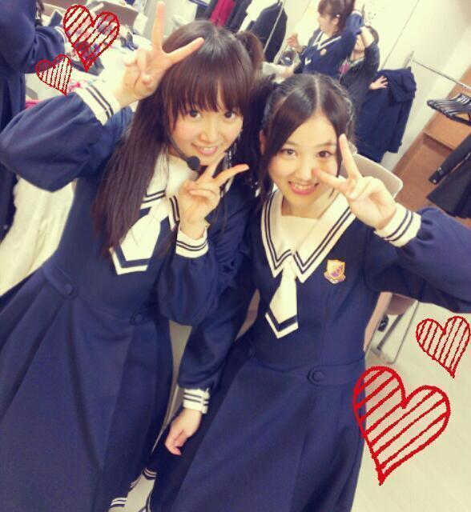
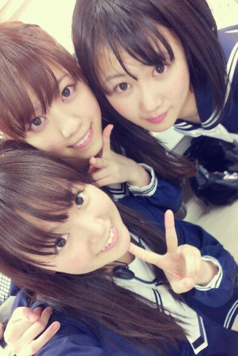
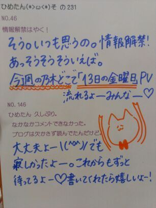
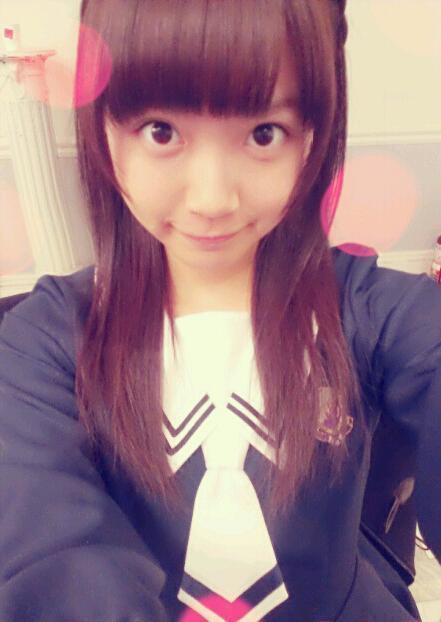
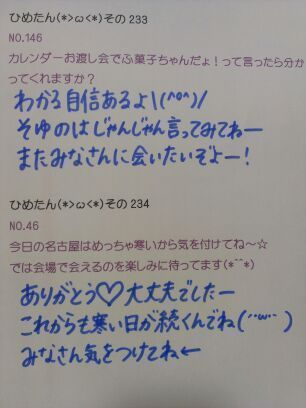
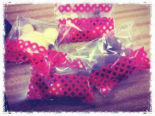
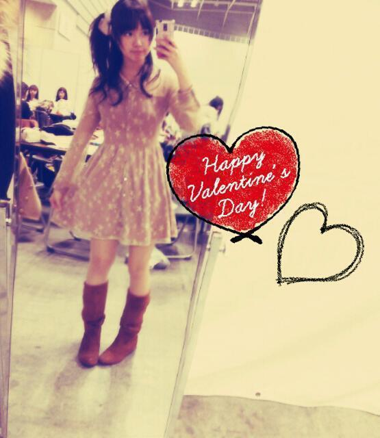
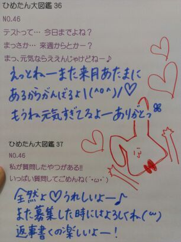
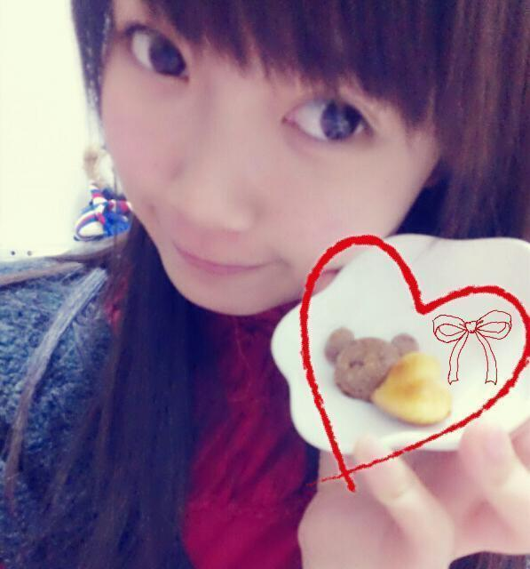
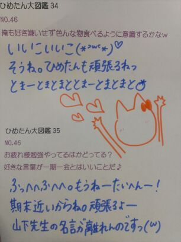

日曜日は撮影して参りましたー！
どんなことしたかはまだ内緒ー♪
ねー気になるでしょ？だから内緒ー
んーそうだなー
生ハーブティなるものを作ってみようと思った！
メイクさんと話しててね、
ハーブティは体にいいらしい
だから飲んでみようと思った以上報告終わりっ！

みなみかわいいー(´。・ω・。｀)
テスト始まるよー
今の時期の学生さんはみんな
そわそわなるよね。テストやだもんね。
テスト終わったら春休みだから！
あとちょっとだから頑張る！
そうか中３組はもう高２になるのかー
はやいなーまだ中身は中３のままなのになー
そういや、いつか３人で遊ぼーゆって
結局全然遊んでなーい(´;ω;`)
ねーブログ見てる？春休みこそ遊ぼうねー？
それから、個人pv予告編公開されましたねー
そうです。今回はお芝居に初挑戦ってことで
乃木坂46の中元日芽香役を演じたんだけれども
これどういうことかわかるかーい(´・ω・｀)？
みなさんもひめたんと一緒に
登校したいなーと思ったら
あのーなつきの時のじゃないけど
みんな横瀬くんになってみてね！
次回から大図鑑になりますー♪
(＊´・ω・＊)
2013.2.22
乃木坂46 1st anniversary !!!
おめでとう！ありがとう！
みなさんに支えられて、1歳のお誕生日を
迎えることができました(^^)
一年前の2月22日は
キャンペーンで各都市に散ってたから
みんな一緒にいられなかったんだよね
だから今年は全員で
お誕生日をお祝いできてよかったです＊
乃木坂46のメンバーとしての一年は
振り替えれば本当に充実していたな、と(ω)
なんてゆか、いろんなこと考えて
いろんなこと がむしゃらにやってたから
あっという間ちゃ
あっという間だったような気がするのね
でも、もちろんだけど
支えてくださるみなさんへの感謝の気持ちは
いつも忘れずに持ち続けています
ファンのみなさん、スタッフさんが
いつも私たちの身近なところで
支えてくださって
メンバーのみんながお互いに
刺激になって高めあっていけるから
乃木坂46は夢に向かって走っていける
私たちは本当に幸せですっ(*^^*)
これからもみなさんに
恩返ししていきたいなーと思っておる！
また今日からたくさん笑ったり
たくさん悩んだりして
２年目突っ走って行きましょうっ
乃木坂は仲良しさんだからね∩^ω^∩
みんなはライバルであり仲間であり
でも本当にみんな仲良しです
この１年間でさらに団結した感あるよねー
これからもみんなで頑張ります＊
そして、昨日のライブを通して
新たな目標を見つけました！
教えてよーってなるかなーと思いますがー、
１年後のひめたんが
きっと答えを示してると思います(｀・ω・´)

そしてライブの報告ー
初の単独アリーナ！持ち曲全曲披露！
5thアンダー曲「13日の金曜日」解禁！
衣装13着着ました！
狼の衣装もライブで着たのははじめてよ！
いろんな仕掛けもありました！
シャンプーとか！
海流の島よ いかがでしたでしょうかー？
今日行けなかったよーて方にも
またライブとかでやりたいなー
結構ダンスナンバーです＊サビとかねー
もうねめっちゃ好きよ(ω)
こうやってお誕生日に
素敵なライブをさせていただいて
もう嬉しい！最高のお誕生日ですっ
Birthday Live セトリどん！
M1 ぐるぐるカーテン
M2 会いたかったかもしれない
M3 左胸の勇気
M4 白い雲にのって
M5 失いたくないから
M6 おいでシャンプー
M7 ハウス！
M8 狼に口笛を
M9 水玉模様
M10 偶然を言い訳にして
M11 心の薬
M12 走れ！bicycle
M13 せっかちなかたつむり
M14 人はなぜ走るのか
M15 涙がまだ悲しみだった頃
M16 海流の島よ
M17 音が出ないギター
M18 制服のマネキン
M19 やさしさなら間に合ってる
M20 渋谷ブルース
M21 ここじゃないどこか
M22 春のメロディー
M23 指望遠鏡
E1 君の名は希望
E2 13日の金曜日
E3 シャキイズム
E4 乃木坂の詩
~赤坂まで あと70日~
(ω)にや

(＊´・ω・＊)
昨日4thラストの個別握手会でしたー！
来てくれたみなさんありがとう∩^ω^∩
今年初京都へと行って参りましたー
京都もとっても楽しかったよ♪
バレンタインのお話が多かったかなー
ひめたんはバレンタインのお話
いっぱいしたから
ひめきゅんさんからのホワイトデーも
楽しみに待ってるよーはーい
でっ.
個握の服も載せたいんだけど
また今度にしてー、
今日は新制服の写めを貼ろうかなと(^^)どんー

へいへへいへいへいへへい＼(^^)／
どうでしょ？
何だかちょっとおしとやかーでしょ？
この制服結構好きですよー///
あっ九スポは18日じゃなくて
17日だったそうですー(´・ω・｀)
嘘つきました。ごめんなさい←
ライブまであとちょっとねー
少しずつ形になっていくのが
なんていうか、わくわくするね(ω)
みんなで頑張って練習してるからねー
行くぜ！って方は楽しみにしててね☆
いーくぜーっ
れーっつごーっ

 ひめたんは和菓子と洋菓子どっちが好き？
ひめたんは和菓子と洋菓子どっちが好き？洋菓子好きだなー♪
和菓子ならあれが好きだよ白いたいやき！
ひめたんって、博多通りもんってお菓子
しってますかっ？(*^_^*):-*知ってる！好きだよー！
福岡は広島と近いのもあって、
お土産でもよくもらったなーそういや。
美味しいよね＊＊
ひめたんがすきな
大阪のお土産ってなんですか？りくろおじさんのチーズケーキ！
くまもんのgoodsは持っていますか？持ってないです(´・ω・｀)
最近いろんなとこでくまもん見る！
オリジナルのもみじ饅頭作るとしたら
どんな感じにしたいですか？もみじフォンダンショコラ！
あと見た目がピンクとか黄色とか
カラフルなのもかわいいと思う(^^)
一口サイズのミニもみじとかー♪
ひめたんの好きな魚はなんですか？鮭のお刺身とかフレークは好きだよー
ちっちゃい頃はお寿司屋さん行っても
たまごしか食べんかったなー
 事務室の先生が好きです!!!!
事務室の先生が好きです!!!!
どうしたらいいと思いますか？まじで悩んでます(>_<)と、とりあ仲良くなってはいかが？
毎日事務室に通うのだ(｀・ω・´)！
頑張れーふれっふれふれれー
もし ひめたん が19歳になったら
10代最後の年はどんな一年にしたい？？実感がわきませーんん
とりあバケツプリン食べたい！
あとね中3組の3人で旅行行きたいなー＊
ひめたんが大人になって
最初にやりたいことはー？ヨーキー飼いたいっ∩^ω^∩わん
好きなスポーツはあるーっ?バスケすき！習ってたの(*^^*)
ダンスもすきよー大好きー！
ウォーキングもまあま好きっ

(＊´・ω・＊)
はっぴーバレンタインー∩^ω^∩
バレンタインはレッスンだったので
メンバーみんなと過ごしましたー
いろいろ作ったんだよー♪

あんのーあれですね。
写めじゃちょっとわかりにくい、と。
ええそうだろうと思ってたんですよ。
ジャッキーちゃんのお菓子
型チョコ、クッキー、
パンケーキ大・小サイズ...
あのーそうです知っての通りみなさん
全部簡単なのね(*/ω\*)
溶かして流して固めるとか
混ぜて焼くとかそーゆーことですねー
はい。機会があればもっと高度なものにも
挑戦しようかなと思ったり思ってなかったり
そして今日は個別握手会でしたっ！
楽しかったーもう盛大に高まりましたー
来てくれた方ありがとう∩^ω^∩
今日寒いから風邪とか引かんかったかな？
乃木どこみたよーとか、東スポみたよーとか
ライブ・5th発売楽しみだよーとか
ひめたんからチョコはー？とかいろいろねー
あっ東スポ...
広島の方は18日発売の九スポに
載っているそうなのでお願いしまっす！
5thは楽しみにしとってねー(^^)
ライブも頑張るからねー＊
チョコは...あのー...
街のいろんな所に置いてきたから
探してみてくださーいーふへっ
私服ー♪

ちなみに待ち時間は
いくちゃん(生田絵梨花chan)と
あしゅ(齋藤飛鳥chan)と
バレンタイン がテーマのちょっとした茶番を
繰り広げておりましたとさー
てゆか！
「さい」って打ったら変換候補に
「齋藤飛鳥」って出てきたぞ！
どうだあしゅ(｀・ω・´)ふんだ
あしゅしゅはこの前ひめたんの記事を読んで
mailくれたからね。内容はヒミツだけどねー
まあもったいぶることでもないような気も
せんでもないけどねー
あえて伏せておくことにしますねー♪

 好きだけど、握手会に行かない場合、
好きだけど、握手会に行かない場合、
ただのファンとして
ずーっと見続けてもいいですか？好きって言ってくれるの
そりゃあもう嬉しいです(｀・ω・´)
寂しいから、気がむいたら遊び来てね！
親指かみかみしながら待ってますよー
英検準2級(ほぼノー勉)
今日受けたんだけど受かってるかな?未来予知してくださいっ!!受かってるよ(^^)おめでとう！
あたしのお友だちもそういや受けてたよー
みんな受かってるよ。大丈夫。
小さい子供は好きですか？好きーちっちゃい子すきっ(*`-ω-´)
ひめたんは、 ダッフルコートか Pコート、
どっちが好きですか？ダッフルコート派かなー
いや、どっちもいいんだけどね？
実際どっちも持ってるけども
なんてゆか、ダッフル好きですなー
ひめたんがドラマに出演するなら
どんな役がしてみたい？学園モノね。クラスのアイドルとかね。
やってみたいなーと思いますよ(´・ω・｀)
ちょっと憧れるよねーわかりますー？
授業中にお手紙リレーみたいなシーンは
もうね完っ璧にこなす自信がある！
...あ、あの、演技ね、あくまで演技。
いつも真面目に授業してごほっから←ね←
毎週観てる番組ありますか？乃木どこ(´ω`)
ひめたんあんましテレビっ子じゃないの←
ひめきゅんじゃ無いけど、
コメ入れたり、握手行ったりは迷惑かな!?全然まったく迷惑ちゃうよ！嬉しいよー
そしたらひめきゅんさんになってもらえるよう
ひめたんがんばりまーす(｀・ω・´)
ひなぴょん推しでひめたん2推しなんだけど
ひめたんにボードもって握手しにいってもいい？いーよーてかありがとうー∩^ω^∩
かわごってぃもきっと喜ぶよ！←
かわごってぃと本屋さんで会って、
何かお話とかしたの？「ひめたん！」「わあーびっくりしたー！」
「こんな格好(制服)で恥ずかしいんだけどー」
「ひめたんいつものことだから大丈夫ー」
みたいな。いわゆる日常会話ってやつ。
他愛もない話ってやつです。
ミスドで一番好きな種類は？
いつも食べたりするのはある？東京来てからあんましミスド見てないなー
Dポップとかフレンチクルーラーとか
好きだった記憶があるよー＊＊

明日は京都へおいでやす！
(＊´・ω・＊)
てことで！
ちっちゃいパンケーキのレシピ
紹介するよー∩^ω^∩＊
バレンタインなに作るか決めてないーて
おにゃのこは是非参考にしてね♪
簡単だよーっ
材料(20っできるかもできんかもー)
ホットケーキミックス 50g
バター 30g
お砂糖 30g
卵 1っ
レモン汁 適量
茶色いやつは
+ココアパウダー適量！
作り方
バターを溶かす
材料全部混ぜる
型に流す
170℃のオーブンで約16~17分焼く
完成！
オーブンの温度と時間は
機種によって違うからきっと
まあちょうどいいとこ探ってね(*・v・)
とまあこんなにも簡単なんだけれども
ひめたんねーちょうどいい温度を見つけるのに
めちゃ時間かかりました←
焦げちゃったやつが山になってて
ままが困ってます(´;ω;`)
あ、話盛ってないからねこれ。がちよ。
完成イメージ！

てことでバレンタインじゃんよみなさん！
ねえーバレンタイン！
ねえーみなさんどうやって過ごすのさー？

 自分の応援してる気持ちは届いてるかな？
自分の応援してる気持ちは届いてるかな？ばしばし届いてます！
いつもありがとう。本当に感謝です。
これからも頑張るねっ＊
これからも親目線で
見守らせてもらってもいい？('-^*)ぱぱまま！
あのね、ひめたんを娘のように
応援してくださる方って
握手会でも変に気負ったりしなくて
落ち着くんだよーほんとに♪
だから嬉しいよー＊
最近ひめたんビームで
ひめたんワールドに引き込まれてるんだけど
ひめたんより2個上の
高３のおばさんが推しても大丈夫？おばさん違うよお姉さんだよー！
もちろんいいに決まってるし
むしろ光栄すぎてもうねーやばい嬉しい。
女の子に好かれるのもいいねー(ω)
あしゅ推しだけど、握手行ってもいい?あしゅ(齋藤飛鳥chan)が
いいって言ったらいいよー
とかいいつつ、だめって言っても
あしゅに内緒で来て欲しいかなー(ω)
握手会の時何を話せばいいですか？何でもいいのよほんとー
昨日の夜ごはんの話でも
最近見つけた素敵なカフェの話でも
なーんでもいーいーのーよー＼(^^)／♪
握手行ったら釣られそうになりました。
今度行ったらもっと釣ってくれますか？？つ、つってるつもりはないよー///
つつつつーつつっつっつー
じゃあまた来てくれたら、その時は
ちょっと釣ってみましょう(｀・ω・´)
一回だけ、
個別に行った人とか覚えてる？www覚えてると思うんだけど
万が一、万が一ひらめいてこなくても
怒らないでくーださいねっ♪
こないだ雪のときのにぎにぎ会で
リズリサの白いコート着て
ツインテールで行ったんだけど
わたしのこと覚えてるかな？（ ; ; ）わかる、わかるよー！
だってめちゃアイドルだったもんー＊
にぎにぎ会(*´ω`*)かわいいねー
あんな寒い日にありがとうねっ
京都個別に行くので、
ぎゅっと握手しながらwww
すってきな笑顔で、
つってくれるかな？www釣って、みせましょう素敵な笑顔で。
覚悟してなさい(^^)とかゆってー
心よりお待ちしております(^^)
スーツ姿で握手会に来る男子って
どう思いますか？スーツ男子！いいですねー
ひめたんドキッとしますよー＊
普段あのースーツの方に会うこと
あんまないのでね。ええ(//ω//)
ひめたんうちわを持ってる人が多いけど
うちわのコメント、
何が書いてあったらうれしいですか？
ひめたん、大好き！
じゃ、ベタ過ぎるよね？？？ベタ過ぎるとかないよ嬉しいよう(´pωq｀)
どんなでも嬉しいけど、
パッと見てすぐにひめきゅんさんって
わかるデザインが嬉しいかなー
うわーありがとうー///
今日は東スポさんの取材行ってきたよー
2/16発売なので、
よかったらみなさん見てねっ＼(^^)／

(＊´・ω・＊)